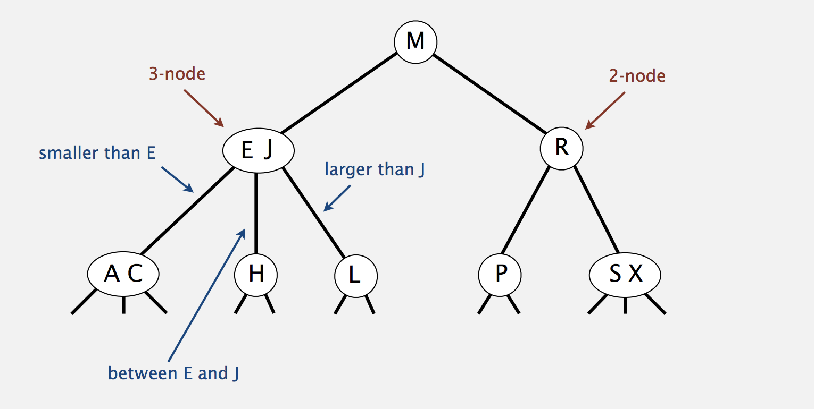
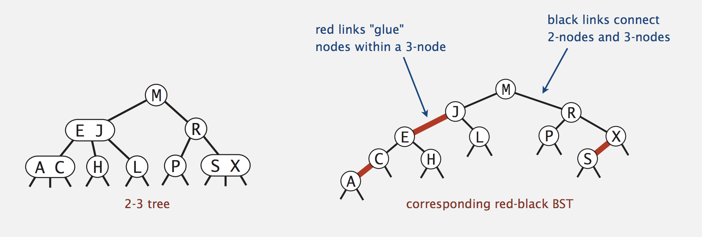
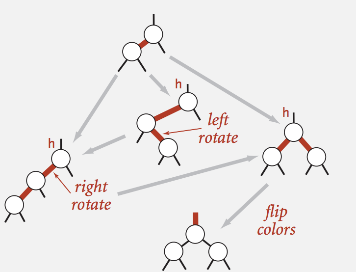
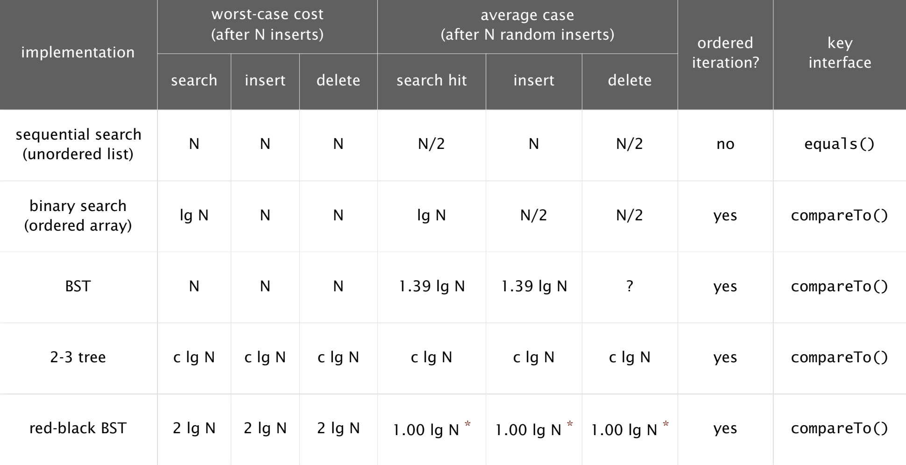

Scenario
Now you have a binary tree, then ….

Definition
A binary tree is either:
- Empty
- Two disjoint binary trees(left and right)
Code representation:/*
* K for key, v for value
*/
template <typename K, typename V>
struct Node {
K key;
V value;
// number of nodes in this subtree
size_t count;
struct Node<K, V> *lchild;
struct Node<K, V> *rchild;
// constructor
Node(K k, V v) :key(k), value(v), count(1), lchild(nullptr), rchild(nullptr){}
};
// pre-define some common node
template <typename K, typename V>
using TNode = struct Node<K, V>;
Travesal(TODO)
Complete Binary Tree
Refer to Heap Sort
Binary Search Tree(BST)
Definition
A BST is a binary tree in symmetric order.
Symmetric Order: Each node has a key, and every node’s key is:
- Larger than all keys in its left subtree.
- Smaller than all keys in its right subtree.
APIs
There are 6 operations: get(), put(), rank(), floor(), ceiling() and delete()
NOTE: Recursive function xxx.l/rchild = f(xxx.l/rchild, …) will help to keep the relationship between child and parrent, which is very convenient in some operations.
V get(T key)- Find && Return value of the given key.//get val of given key, if no sunch key, then return nullptr
V get(K key) {
V found_value = null_value_;
// temp node for travasing the tree
TNode<K, V> *node = root_;
while (node != nullptr) {
if (node->key < key) {
node = node->rchild;
} else if (node->key > key) {
node = node->lchild;
} else {
found_value = node->value;
break;
}
}
return found_value;
};void put(K key, V value)- put <key, val> pair into BST// put <key, val> pair as a node in BST
void put(K key, V value) {
root_ = put(root_, key, value);
++size_;
};
// recursively search until find the right place of given <key, value>
// two scenario:
// 1. find existing key, replace with new val
// 2. meet a nullptr node means the pair should be inserted here
// NOTE: pattern xxx = put(xxx, key, value) is used to maintain the parrent info
TNode<K, V> *put(TNode<K, V> *node, K key, V value) {
// locate key's position
if (node == nullptr) {
TNode<K, V> *node = new TNode<K, V>(key, value);
return node;
}
// binary search & update subtree count
if (node->key > key) node->lchild = put(node->lchild, key, value);
else if (node->key < key) node->rchild = put(node->rchild, key, value);
else node->value = value;
node->count = 1 + count(node->lchild) + count(node->rchild);
return node;
}size_t rank(TNode<K, V> *node, K key)- return how many k for k <= key// rank means how many k for k <= key
size_t rank(K key) {
return rank(root_, key);
}
// recursively find until meeting the biggest k in k <= key
// 3 cases:
// 1. node->key == key, return 1;
// 2. node->key > key, search in node->lchild;
// 3. node->key < key, 1 + node->left->count + search in node->rchild
size_t rank(TNode<K, V> *node, K key) {
if (node == nullptr) return 0; // error handling
if (node->key == key) return 1 + count(node->lchild); // case 1
else if (node->key > key){
return rank(node->lchild, key); // case 2
} else {
return 1 + count(node->lchild) + rank(node->rchild, key); // case 3
}
}V floor(K key)- return the biggest k for k <= key// floor means the biggest k in k <= key
V floor(K key) {
TNode<K, V> *node = floor(root_, key);
// key is the smallest key
if (node == nullptr) return null_value_;
return node->key;
}
// recursively search the biggest k for k <= key
// 3 cases:
// 1. node->key == key, return node
// 2. node->key > key, search in node->lchild
// 3. node->key < key, target >= node->key
TNode<K, V> *floor(TNode<K, V> *node, K key) {
if (node == nullptr) return node; // error handling
if (node->key == key) return node; // case 1
else if (node->key > key) return floor(node->lchild, key); // case 2
else { // case 3
TNode<K, V> *right = floor(node->rchild, key);
return right == nullptr ? node : right;
}
}V ceiling(K key)- return smallest k for k >= key// ceil means the smallest k in k >= key
V ceiling(K key) {
TNode<K, V> *node = ceiling(root_, key);
// key is the biggest key
if (node == nullptr) return null_value_;
return node->key;
}
// recursively search the smallest k for k >= key
// 3 cases:
// 1. node->key == key, return node
// 2. node->key < key, search in node->rchild
// 3. node->key > key, target <= node->key
TNode<K, V> *ceiling(TNode<K, V> *node, K key) {
if (node == nullptr) return node; // error handling
if (node->key == key) return node; // case 1
else if (node->key < key) return ceiling(node->rchild, key); // case 2
else { // case 3
TNode<K, V> *left = ceiling(node->lchild, key);
return left == nullptr ? node : left;
}
}void remove(K key)- remove <key, value> pair in BST// remove min node in tree
TNode<K, V> *remove_min(TNode<K, V> *node) {
if (node->lchild == nullptr) return node->rchild;
node->lchild = remove_min(node->lchild);
node->count = 1 + count(node->lchild) + count(node->rchild);
return node;
}
// remove <key, value> pair from current BST by given kye
// 3 cases:
// 1. no child: remove directly
// 2. 1 child: remove than link child to its parent
// 3. 2 child: replace key with its successor which means ceiling(key)
TNode<K, V> *remove(TNode<K, V> *node, K key) {
if (node == nullptr) return nullptr; // not found
if (node->key > key) {
node->lchild = remove(node->lchild, key); // in left subtree
} else if (node->key < key) {
node->rchild = remove(node->rchild, key); // in right subtree
} else {
// found key
--size_;
if (node->lchild == nullptr) { // case 1 & 2
TNode<K, V> *right = node->rchild;
delete node;
return right;
}
if (node->rchild == nullptr) { // case 1 & 2
TNode<K, V> *left = node->lchild;
delete node;
return left;
}
// case 3. replace node with successor
TNode<K, V> *successor = node->rchild;
while (successor->lchild != nullptr) successor = successor->lchild;
successor->rchild = remove_min(successor);
successor->lchild = node->lchild;
delete node;
node = successor;
}
node->count = 1 + count(node->lchild) + count(node->rchild);
return node;
};
// remove <key, value> pair from current BST by given key
void remove(K key) {
root_ = remove(root_, key);
}
Analysis
- Time complexity is input-data-sensitive, at a random order, both search and insert are $$ \sim 1.39lg\bullet N $$ But if at an increase order, both are $$ \sim N $$
Balanced Search Tree
Since the above BST is very sensitive to input data, we have to introduce an advanced version to handle every input and still give the awesome performance.
Definition
Balanced Search Tree is a kind of Binary Search Tree(BST) with the ability to self-balance , which makes the tree is almost perfect balanced, via, the length differences of every leaf node are not bigger than 1.
2-3 Tree

Introduction
2-3 Tree is a kind of balanced search tree, it drives from binary search tree by enabling each tree node contains at most 2 keys. More specifically, a 2-3 tree has the following two kinds of nodes:
- 2 nodes: the normal nodes in every binary search tree.
- 3 nodes: the node cantains 2 keys instead of 1 key.
Example: B, D are two keys in such a node. Then this node have three children:- Left child with k < B
- Middle child with B <= k <= D
- Right child with k > D
This feature enables 2-3 tree to peform a nearly perfect balance in both insertion and deletion.
Insertion
Steps:
- If the parent node of insertion postion is a 2 nodes, insert key into this node to make it become a 3 nodes
- If the parent node of insertion postion is a 3 nodes, insert key into this node to make it become a 4 nodes, then split it by pop the middle key up.
Read-Black Tree

Introduction
Here we will introduce the Left-leaning red-black Tree, it is an optimization version of traditonal red-black tree and both of these kinds of red-black tree drives from 2-3 tree. The left-leaning red-black tree use “internal” left-leaning links as “glue” for 3–nodes.
Definition:
- No node has two red links connected to it.
- Every path from root to null link has the same number of black links.
- Red links lean left.
So the longgest path of a LLRB tree is at most $2logN$, which means the search/insert/delete compare times are also at most $2logN$.
APIs(TODO)
TreeNodeprivate class Node
{
Key key;
Value val;
Node left, right;
boolean color; // color of parent link
}
Basic Principle:
- Right child red, left child black: rotate left
- Left child black, left-left grand child black: rorate right
- Both child red: flip colors
Repeat above 1 - 3 operations until it becomes qualified

Figure 4. Red-Black Tree Self-Balancing Put()…
- Delete()…
Conclusion
